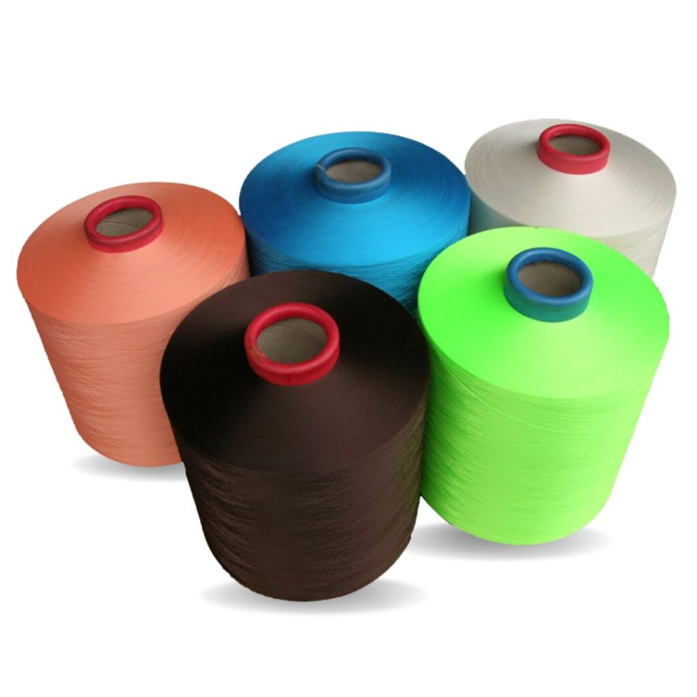
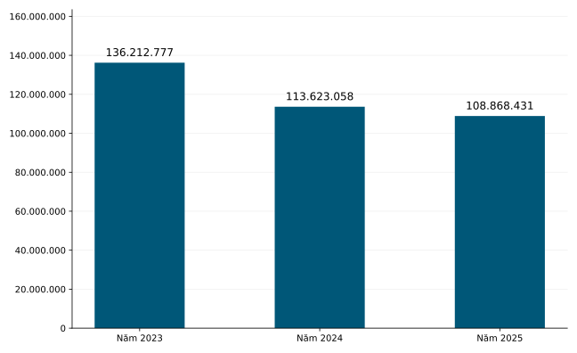
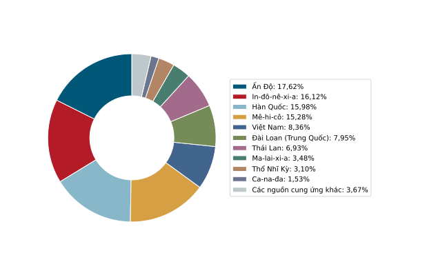
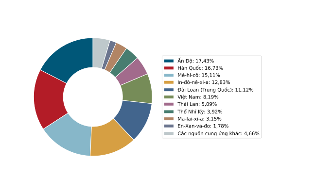
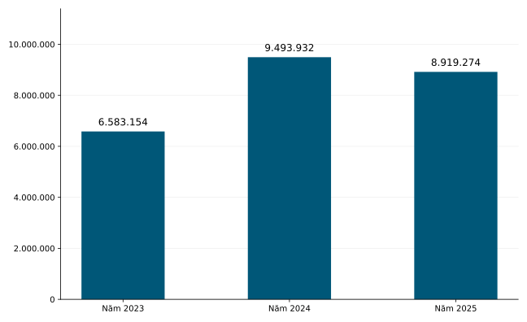
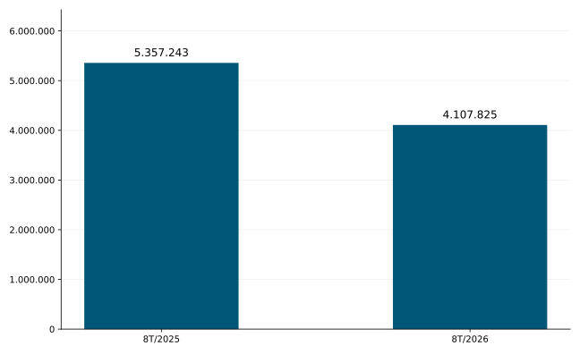

♦ Cục Phòng vệ thương mại tiếp nhận hồ sơ đầy đủ, hợp lệ yêu cầu điều tra chống bán phá giá đối với thép không gỉ cán nguội từ Trung Quốc, In-đô-nê-xi-a và Đài Loan – Trung Quốc

♦ Cảnh báo đối với mặt hàng sợi dún polyester xuất khẩu vào thị trường Hoa Kỳ
Cục Phòng vệ thương mại tiếp nhận hồ sơ đầy đủ, hợp lệ yêu cầu điều tra chống bán phá giá đối với thép không gỉ cán nguội từ Trung Quốc, In-đô-nê-xi-a và Đài Loan – Trung Quốc
Ngày 29 tháng 9 năm 2026, Cục Phòng vệ thương mại (Cơ quan điều tra) đã tiến hành xác nhận Hồ sơ của các công ty đại diện cho ngành sản xuất trong nước (Bên yêu cầu) đề nghị điều tra áp dụng biện pháp chống bán phá giá đối với sản phẩm thép không gỉ cán nguội có xuất xứ từ Cộng hòa nhân dân Trung Hoa, Cộng hòa In-đô-nê-xi-a và lãnh thổ Đài Loan – Trung Quốc đầy đủ, hợp lệ theo quy định của pháp luật về phòng vệ thương mại.
Theo quy định tại Điều 70 Luật Quản lý ngoại thương, trong thời hạn 45 ngày kể từ ngày xác nhận Hồ sơ đầy đủ, hợp lệ, Cơ quan điều tra sẽ thẩm định Hồ sơ để trình Bộ trưởng Bộ Công Thương xem xét quyết định tiến hành điều tra hoặc không tiến hành điều tra vụ việc.
Nội dung thẩm định Hồ sơ bao gồm: (i) xác định tư cách đại diện hợp pháp của ngành sản xuất trong nước của tổ chức, cá nhân nộp Hồ sơ theo quy định của Luật Quản lý ngoại thương; và (ii) xác định chứng cứ về việc bán phá giá của hàng hóa nhập khẩu gây ra hoặc đe dọa gây ra thiệt hại đáng kể cho ngành sản xuất trong nước hoặc ngăn cản đáng kể sự hình thành của ngành sản xuất trong nước.
Để phục vụ công tác thẩm định Hồ sơ và bảo đảm quyền, lợi ích hợp pháp của các doanh nghiệp, Cơ quan điều tra đề nghị các doanh nghiệp trong nước sản xuất, kinh doanh hàng hóa tương tự với sản phẩm đang được đề nghị điều tra cung cấp các thông tin gồm: thông tin về doanh nghiệp; công suất thiết kế và sản lượng sản phẩm thép không gỉ cán nguội trong giai đoạn từ năm 2021 đến năm 2026; ý kiến của doanh nghiệp về vụ việc (đồng ý, phản đối hoặc không có ý kiến); và các tài liệu, chứng cứ khác mà doanh nghiệp cho rằng có liên quan đến vụ việc. Thời hạn cung cấp thông tin, tài liệu là ngày 12 tháng 10 năm 2026.
TIN TRONG NƯỚC
Nam Phi khởi xướng điều tra chống bán phá giá đối với xi măng Portland nhập khẩu từ Việt Nam và Mozambique
Cơ quan Quản lý Thương mại Quốc tế Nam Phi (ITAC) đã khởi xướng điều tra chống bán phá giá đối với sản phẩm xi măng Portland có xuất xứ hoặc nhập khẩu từ Việt Nam và Mozambique, trên cơ sở Hồ sơ đề nghị của Afrimat Industries South Africa Proprietary Limited, Intercement South Africa Proprietary Limited và Dangote Cement South Africa Proprietary Limited (gọi chung là Nguyên đơn). Nguyên đơn cáo buộc sản phẩm bị điều tra được bán phá giá vào thị trường Liên minh Thuế quan miền Nam châu Phi (SACU), gây thiệt hại đáng kể và đe dọa gây thiệt hại đáng kể cho ngành sản xuất SACU.
Sản phẩm bị điều tra là xi măng Portland, thuộc phân nhóm thuế 2523.29. Thời kỳ điều tra bán phá giá từ ngày 01 tháng 01 năm 2025 đến ngày 31 tháng 12 năm 2025; thời kỳ xem xét thiệt hại từ ngày 01 tháng 01 năm 2023 đến ngày 31 tháng 12 năm 2025. Đối với Việt Nam, biên độ bán phá giá bị cáo buộc là 37,04%. ITAC xác định giá trị thông thường dựa trên dữ liệu giá xi măng trong nước từ các bảng công bố giá vật liệu xây dựng của Sở Xây dựng tỉnh Quảng Ninh; giá xuất khẩu được xác định trên cơ sở số liệu nhập khẩu của Cơ quan Thuế Nam Phi (SARS), có điều chỉnh chi phí vận chuyển nội địa để đưa về mức giá xuất xưởng.
ITAC quyết định đánh giá gộp tác động của hàng nhập khẩu từ Việt Nam và Mozambique khi xem xét thiệt hại và mối quan hệ nhân quả. Theo Nguyên đơn, trong giai đoạn 2023–2025, ngành sản xuất SACU suy giảm về thị phần, lượng bán, sản lượng, lợi nhuận, mức sử dụng công suất, dòng tiền và việc làm; trong khi tồn kho tăng, tăng trưởng âm và xuất hiện hiện tượng kìm giá, ép giá. Nguyên đơn cũng cáo buộc có nguy cơ tiếp tục gây thiệt hại đáng kể do năng lực sản xuất có thể chuyển hướng của các nhà xuất khẩu, xu hướng gia tăng nhập khẩu và tác động của giá nhập khẩu đến giá trong nước.
Về thủ tục điều tra, ITAC đã gửi Hồ sơ đề nghị bản công khai và Bản câu hỏi điều tra tới các nhà nhập khẩu, nhà xuất khẩu và hiệp hội được biết đến, đồng thời thông báo cho cơ quan đại diện thương mại của các nước xuất khẩu. Các bên liên quan cần chủ động liên hệ ITAC để xác nhận việc nhận Hồ sơ và Bản câu hỏi. Bản trả lời, bao gồm bản mật và bản công khai, phải được gửi trong thời hạn 30 ngày kể từ ngày ban hành Thông báo hoặc kể từ ngày nhận thư kèm Bản câu hỏi. ITAC có thể xem xét gia hạn tối đa 14 ngày nếu có lý do chính đáng và yêu cầu được gửi trước khi hết thời hạn ban đầu.
Đối với thông tin mật, doanh nghiệp phải cung cấp đồng thời bản công khai, nêu rõ phần thông tin được bảo mật, lý do bảo mật và bản tóm tắt phù hợp. Trường hợp thông tin không được cung cấp đầy đủ, đúng hạn hoặc không thể thẩm tra, ITAC có thể không sử dụng thông tin đó và đưa ra kết luận trên cơ sở các dữ kiện sẵn có.
ITAC có thể tiến hành thẩm tra tại chỗ, dự kiến đối với doanh nghiệp xuất khẩu trong khoảng 03–05 tuần sau khi nộp Bản trả lời. Các bên liên quan cũng có thể đề nghị tổ chức điều trần công khai trong quá trình điều tra, với điều kiện nêu rõ lý do cần trình bày trực tiếp thay vì chỉ đệ trình bằng văn bản. ITAC có thể từ chối nếu việc tổ chức điều trần gây chậm trễ không cần thiết cho quá trình điều tra.
TIN TRONG NƯỚC
Liên minh Châu Âu (EU) áp dụng biện pháp tự vệ tạm thời đối với sản phẩm thép điện định hướng dạng hạt (GOES)
Theo thông tin của Phái đoàn Việt Nam tại Bỉ và EU, ngày 18 tháng 9 năm 2026, Ủy ban Châu Âu (EC) ban hành Quy định (EU) 2026/2133 về việc áp dụng biện pháp tự vệ tạm thời đối với một số sản phẩm thép điện định hướng dạng hạt (GOES). Quy định có hiệu lực từ ngày 25 tháng 9 năm 2026 và biện pháp tự vệ tạm thời được áp dụng trong thời gian 155 ngày, đến ngày 26 tháng 02 năm 2027. Trước đó, ngày 27 tháng 3 năm 2026, EC đã thông báo khởi xướng điều tra vụ việc.
Theo thông báo của EC, Việt Nam hiện thuộc danh sách các nước đang phát triển được loại trừ khỏi biện pháp tự vệ tạm thời do lượng nhập khẩu không đáng kể.
Cục Phòng vệ thương mại khuyến nghị các doanh nghiệp, hiệp hội và các bên liên quan tiếp tục theo dõi diễn biến vụ việc, đồng thời phối hợp, cập nhật thông tin cho Cục để được hỗ trợ kịp thời trong trường hợp cần thiết.
TIN NƯỚC NGOÀI
Úc đổi tên Ủy ban Chống bán phá giá thành Ủy ban Phòng vệ thương mại, tiếp nhận chức năng điều tra tự vệ
Ngày 29 tháng 9 năm 2026, Ủy ban Chống bán phá giá Úc (Anti-Dumping Commission) chính thức được đổi tên thành Ủy ban Phòng vệ thương mại Úc (Australian Trade Remedies Commission – ATRC), đồng thời được giao thêm chức năng điều tra các vụ việc tự vệ. Việc thay đổi nhằm tập trung toàn bộ chức năng điều tra, áp dụng các biện pháp phòng vệ thương mại tại một cơ quan chuyên trách.
Theo đó, ATRC tiếp tục thực hiện các chức năng điều tra chống bán phá giá và chống trợ cấp, đồng thời tiếp nhận chức năng điều tra tự vệ trước đây thuộc Ủy ban Năng suất Úc (Productivity Commission). Việc tập trung các chức năng này tại một cơ quan được kỳ vọng góp phần nâng cao hiệu quả quản lý và đơn giản hóa quy trình đối với ngành sản xuất của Úc.
Việc đổi tên và bổ sung chức năng được thực hiện theo Luật sửa đổi Hải quan (Điều tra tự vệ) năm 2026 (Customs Amendment (Safeguard Inquiries) Act 2026), có hiệu lực từ ngày 29 tháng 9 năm 2026 và sửa đổi hai văn bản pháp luật gồm Luật Hải quan năm 1901 (Customs Act 1901) và Luật Thuế quan Hải quan (Chống bán phá giá) năm 1975 (Customs Tariff (Anti-Dumping) Act 1975).
Biện pháp tự vệ là biện pháp mà Chính phủ Úc có thể áp dụng khi lượng hàng hóa nhập khẩu gia tăng gây ra hoặc đe dọa gây thiệt hại nghiêm trọng cho ngành sản xuất trong nước. Các biện pháp này có thể được áp dụng dưới hình thức hạn ngạch, thuế quan hoặc hạn ngạch thuế quan, có thời hạn và áp dụng đối với từng sản phẩm cụ thể, phù hợp với các nghĩa vụ của Úc trong khuôn khổ Tổ chức Thương mại thế giới (WTO).
Ngành sản xuất bị ảnh hưởng có thể đề nghị Bộ trưởng khởi xướng điều tra tự vệ. Trường hợp Chính phủ quyết định tiến hành điều tra, vụ việc sẽ được chuyển đến Chủ tịch ATRC. ATRC sẽ tiến hành điều tra và đưa ra khuyến nghị về việc có áp dụng biện pháp tự vệ hay không. Việc gửi đề nghị không đồng nghĩa với việc điều tra tự vệ được tự động khởi xướng; điều tra chỉ bắt đầu khi Bộ trưởng quyết định chuyển vụ việc cho Chủ tịch ATRC.
Tổng hợp từ Industry.gov.au
TIN NƯỚC NGOÀI
Ấn Độ khởi xướng điều tra chống bán phá giá đối với 7 sản phẩm của Trung Quốc, trong đó có nhiều nguyên liệu dược phẩm
Tổng cục Phòng vệ thương mại Ấn Độ (DGTR) thuộc Bộ Thương mại và Công nghiệp Ấn Độ đã khởi xướng các vụ việc điều tra chống bán phá giá thông qua các thông báo riêng được ban hành trong khoảng thời gian từ ngày 23 đến ngày 28 tháng 9 năm 2026.
Trong số 7 vụ việc, 4 vụ việc liên quan đến các nguyên liệu hoặc chất trung gian sử dụng trong sản xuất dược phẩm. Các vụ việc còn lại liên quan đến nhựa dùng trong sản xuất sản phẩm cao su, ray dẫn hướng thang máy và một loại hóa chất được sử dụng để sản xuất mút xốp mềm.
Có 6 vụ việc liên quan đến hàng hóa nhập khẩu từ Trung Quốc. Riêng vụ việc điều tra đối với 6-Amino Penicillanic Acid (6-APA) bao gồm cả hàng hóa nhập khẩu từ Trung Quốc và Liên minh châu Âu (EU).
Công ty Lyfius Pharma đã đề nghị điều tra đối với Penicillin G và các dạng muối của hoạt chất này. Đây là nguyên liệu đầu vào để sản xuất một số loại kháng sinh và cũng được sử dụng làm hoạt chất dược phẩm.
Công ty Qule Pharma cũng đưa ra đề nghị điều tra đối với 6-APA, một chất trung gian được sử dụng để sản xuất các kháng sinh nhóm beta-lactam. Hồ sơ đề nghị điều tra của công ty bao gồm hàng hóa nhập khẩu từ cả Trung Quốc và EU.
Công ty Apitoria Pharma, một công ty con do Aurobindo Pharma sở hữu 100% vốn cũng đã nộp đơn đề nghị điều tra đối với Amoxycillin Trihydrate.
DGTR cho biết Apitoria chiếm hơn 35% tổng sản lượng sản xuất sản phẩm này tại Ấn Độ. Cùng với Centrient Pharmaceuticals India (chi nhánh tại Ấn Độ của Centrient Pharmaceuticals – một tập đoàn dược phẩm hàng đầu thế giới của Hà Lan) cũng là doanh nghiệp ủng hộ đơn đề nghị điều tra, hai công ty chiếm hơn 60% sản lượng sản xuất trong nước.
DGTR cho biết đã xác định có đủ bằng chứng sơ bộ về việc hàng hóa bị bán phá giá, gây thiệt hại cho các nhà sản xuất trong nước và có mối quan hệ nhân quả giữa việc bán phá giá và thiệt hại. DGTR cũng cho rằng biên độ bán phá giá sơ bộ cao hơn ngưỡng tối thiểu theo quy định và ở mức đáng kể.
Thời kỳ điều tra được xác định từ ngày 1 tháng 4 năm 2025 đến ngày 31 tháng 3 năm 2026. Các kết luận sơ bộ này là cơ sở để khởi xướng điều tra và không phải là kết luận cuối cùng.
Trong một vụ việc khác, Công ty Morepen Laboratories đề nghị điều tra đối với Montelukast Sodium, một hoạt chất dược phẩm được sử dụng trong các loại thuốc điều trị các bệnh về hô hấp và dị ứng. Công ty cáo buộc hàng hóa nhập khẩu từ Trung Quốc bán phá giá đã gây thiệt hại đáng kể cho ngành sản xuất trong nước.
Công ty SI Group India và Finorchem đề nghị điều tra đối với Para-tert-Octyl Phenol Formaldehyde Tackifier Resin, sản phẩm chủ yếu được sử dụng trong sản xuất lốp xe và các sản phẩm cao su khác.
Công ty Saver India Riding Systems đề nghị điều tra đối với ray dẫn hướng hình chữ T dùng cho thang máy/thang nâng (T-Shaped Elevator/Lift Solid Guide Rails), có chức năng dẫn hướng cabin và đối trọng của thang máy trong quá trình di chuyển theo phương thẳng đứng.
Vụ việc thứ bảy liên quan đến Copolymer Polyol có chỉ số hydroxyl từ 23,5 trở lên. Công ty Expanded Polymer Systems đã nộp đơn đề nghị điều tra. Hóa chất này chủ yếu được sử dụng để sản xuất mút xốp mềm dùng trong đệm và cũng được sử dụng trong một số linh kiện ô tô.
Các vụ việc điều tra đối với nguyên liệu dược phẩm được khởi xướng trong bối cảnh Chính phủ Ấn Độ đang thúc đẩy sản xuất trong nước đối với các nguyên liệu dược phẩm quan trọng.
Việc khởi xướng điều tra không đồng nghĩa với việc áp dụng ngay thuế CBPG. DGTR sẽ tiếp tục xem xét các yếu tố liên quan đến bán phá giá, thiệt hại đối với ngành sản xuất trong nước và mối quan hệ nhân quả giữa hàng hóa bán phá giá và thiệt hại trước khi quyết định có đề xuất áp dụng biện pháp CBPG lên Chính phủ Ấn Độ hay không.
Tổng hợp từ Openthemagazine.com
TIN NƯỚC NGOÀI
Ấn Độ đề xuất áp dụng thuế chống bán phá giá đối với sản phẩm đồ thủy tinh borosilicate dùng cho bàn ăn và nhà bếp nhập khẩu từ Trung Quốc
Ngày 24 tháng 9 năm 2026, Tổng Cục Phòng vệ thương mại Ấn Độ (DGTR) thuộc Bộ Thương mại và Công nghiệp Ấn Độ đã ban hành Kết luận cuối cùng trong vụ việc điều tra chống bán phá giá (CBPG) đối với sản phẩm đồ thủy tinh borosilicate dùng cho bàn ăn và nhà bếp có xuất xứ hoặc nhập khẩu từ Trung Quốc. Theo đó, DGTR đề xuất áp dụng thuế CBPG trong thời hạn 5 năm.
Vụ việc được khởi xướng trên cơ sở đơn đề nghị của Borosil Limited, nhà sản xuất duy nhất tại Ấn Độ sản xuất sản phẩm tương tự với sản phẩm bị điều tra. Sau khi xem xét các thông tin, dữ liệu thương mại và ý kiến của các bên liên quan, DGTR xác định hàng hóa bị điều tra có xuất xứ hoặc nhập khẩu từ Trung Quốc được bán tại thị trường Ấn Độ với mức giá thấp hơn giá trị thông thường.
DGTR đồng thời xác định lượng hàng hóa nhập khẩu bán phá giá đã gây thiệt hại đáng kể đối với ngành sản xuất trong nước. Theo kết luận của DGTR, Borosil Limited được xác định là nhà sản xuất duy nhất của sản phẩm thuộc phạm vi điều tra và do đó đại diện cho toàn bộ ngành sản xuất trong nước của Ấn Độ.
DGTR cũng cho rằng việc áp dụng biện pháp CBPG không trái với lợi ích công cộng và phù hợp với nguyên tắc thuế suất thấp hơn (lesser duty rule).
Theo kết luận cuối cùng, sản phẩm thuộc phạm vi điều tra là đồ thủy tinh borosilicate dùng cho bàn ăn và nhà bếp, không bao gồm một số sản phẩm như lọ, bình đựng nước, bình pha trà/cà phê, bình đựng dầu và một số loại hộp đựng. Sản phẩm được phân loại theo các mã HS 7013 2800, 7013 3700, 7013 4200, 7013 4900 và 7013 9900.
Mức thuế CBPG được DGTR đề xuất là 703 USD/tấn đối với Công ty Anhui Deli Industrial Glass Co., Ltd. và 1.526 USD/tấn đối với các nhà sản xuất, xuất khẩu khác.
Việc áp dụng chính thức biện pháp CBPG vẫn cần được Chính phủ Ấn Độ xem xét và ban hành thông báo áp dụng theo quy định.
Tổng hợp từ Equitybulls.com
TIN NƯỚC NGOÀI
Nam Phi áp dụng thuế chống bán phá giá chính thức đối với sản phẩm thép cuộn chống ăn mòn nhập khẩu từ Trung Quốc
Ngày 18/9/2026, Nam Phi chính thức áp dụng biện pháp chống bán phá giá đối với một số sản phẩm thép cuộn chống ăn mòn có xuất xứ từ Trung Quốc. Các sản phẩm thuộc phạm vi áp dụng biện pháp được phân loại theo các mã HS: 7210.61.20, 7210.61.30, 7225.9.225 và 7225.92.35. Theo đó, mức thuế chống bán phá giá ban đầu là 5,5% đối với các nhà sản xuất, nhà xuất khẩu Trung Quốc, ngoại trừ Công ty Shandong Guanxian Foryune Composite Materials.
Biện pháp được Cơ quan Thuế Nam Phi (SARS) triển khai sau khi Ủy ban Quản lý Thương mại Quốc tế Nam Phi (ITAC) hoàn tất điều tra. Theo ITAC, thép cuộn chống ăn mòn chủ yếu được sử dụng trong hoạt động cán lại, gia công và sản xuất các sản phẩm tấm lợp dạng sóng.
Biện pháp áp dụng đối với một số sản phẩm thép dẹt cán phẳng bằng sắt hoặc thép không hợp kim được phủ hợp kim nhôm-kẽm, có chiều rộng từ 600 mm trở lên và độ dày không quá 0,45 mm, cùng một số sản phẩm thép hợp kim dẹt cán phẳng khác được phủ kẽm.
Cuộc điều tra được khởi xướng trên cơ sở đơn yêu cầu của ArcelorMittal South Africa và SAFAL Steel. Theo kết quả điều tra của ITAC, các sản phẩm có xuất xứ từ Trung Quốc được nhập khẩu vào thị trường Liên minh Hải quan miền Nam châu Phi (SACU) với mức giá bán phá giá và gây thiệt hại đáng kể cho ngành sản xuất trong khu vực. Trên cơ sở kết quả điều tra, SARS đã triển khai biện pháp chống bán phá giá chính thức đối với các sản phẩm thuộc phạm vi vụ việc.
Theo lộ trình áp dụng, mức thuế 5,5% đối với các nhà sản xuất, nhà xuất khẩu Trung Quốc, ngoại trừ Shandong Guanxian Foryune Composite Materials, được áp dụng đến ngày 11/6/2027.
Từ ngày 12/6/2027 đến ngày 11/6/2028, mức thuế sẽ tăng lên 20,5%; từ ngày 12/6/2028 đến ngày 11/6/2029, mức thuế tiếp tục tăng lên 35,5%. Kể từ ngày 12/6/2029, mức thuế chống bán phá giá sẽ tăng lên 57,84%.
Đối với sản phẩm được sản xuất hoặc xuất khẩu bởi Shandong Guanxian Foryune Composite Materials, mức thuế chống bán phá giá là 8,21%, bắt đầu áp dụng từ ngày 12/6/2029.
Tổng hợp từ steelradar.com
TIN NƯỚC NGOÀI
Bra-xin khởi xướng điều tra chống bán phá giá đối với sản phẩm lưới thép nhập khẩu từ Trung Quốc
Ngày 1/10/2026, Ban Ngoại thương thuộc Bộ Phát triển, Công nghiệp và Ngoại thương Bra-xin (SECEX) khởi xướng điều tra chống bán phá giá đối với sản phẩm lưới thép các-bon hình lục giác mạ kẽm nhập khẩu có xuất xứ từ Trung Quốc. Mã HS: 7314.41.00. Sản phẩm thuộc phạm vi điều tra là lưới thép hình lục giác mạ kẽm, có kích thước mắt lưới không quá 100,0 mm và đường kính dây thép không quá 2,15 mm.
Cuộc điều tra được khởi xướng trên cơ sở đơn yêu cầu ngày 30/1/2026 của nhà sản xuất trong nước Morlan S.A., với sự ủng hộ của Belgo Bekaert Arames Ltda. và Comep Indústria e Comércio Ltda.
Theo thông tin tại thời điểm khởi xướng, biên độ bán phá giá được tính toán ở mức 233,7%, tương đương 2.285,48 USD/tấn. Mức biên độ này được xác định trên cơ sở giá trị thông thường được xây dựng ở mức 3.263,27 USD/tấn, so với giá xuất khẩu của Trung Quốc ở mức 977,79 USD/tấn.
Cơ quan điều tra phòng vệ thương mại Bra-xin xác định Mê-hi-cô là nước thay thế có nền kinh tế thị trường để xây dựng giá trị thông thường, trên cơ sở nhận định điều kiện kinh tế thị trường chưa được áp dụng đối với ngành sản xuất sản phẩm thuộc phạm vi điều tra tại Trung Quốc.
Theo quy định, cuộc điều tra dự kiến được hoàn tất trong thời hạn 10 tháng và có thể được gia hạn lên tối đa 18 tháng.
Tổng hợp từ steelorbis.com
TIN NƯỚC NGOÀI
EU khởi xướng rà soát cuối kỳ biện pháp chống trợ cấp đối với sản phẩm thép không gỉ cán nguội từ Ấn Độ và In-đô-nê-xi-a
Ngày 30/9/2026, Ủy ban châu Âu (EC) thông báo khởi xướng rà soát cuối kỳ đối với biện pháp chống trợ cấp đang áp dụng đối với sản phẩm thép không gỉ cán nguội dạng tấm và cuộn có xuất xứ từ Ấn Độ và In-đô-nê-xi-a. Sản phẩm thuộc các mã HS: 7219.31.00, 7219.32.10, 7219.32. 90, 7219.33.10, 7219.33 90, 7219. 34.10, 7219. 34. 90, 7219.35.10, 7219.35.90, 7219.90.20, 7219.90.80, 7220.20. 21, 7220.20.29, 7220.20.41, 7220.20.49, 7220.20.81, 7220.20.89, 7220.90.20 và 7220.90.80. Cuộc rà soát nhằm đánh giá liệu việc chấm dứt biện pháp có khả năng dẫn đến tiếp diễn hoặc tái diễn hành vi trợ cấp và gây thiệt hại cho ngành sản xuất trong nước của EU hay không.
Thời kỳ rà soát được xác định từ ngày 1/7/2025 đến ngày 30/6/2026 và dự kiến hoàn tất trong thời hạn 12 tháng. Hiện mức thuế chống trợ cấp đang áp dụng đối với sản phẩm thuộc phạm vi rà soát là 4,3% và 7,5% đối với hàng hóa có xuất xứ từ Ấn Độ; đối với hàng hóa có xuất xứ từ In-đô-nê-xi-a, các mức thuế lần lượt là 0%, 13,5% và 21,4%, tùy thuộc vào doanh nghiệp.
Việc EC khởi xướng rà soát cuối kỳ biện pháp chống trợ cấp được thực hiện trong bối cảnh cơ quan này cũng đang tiến hành rà soát cuối kỳ đối với biện pháp chống bán phá giá áp dụng cho cùng sản phẩm có xuất xứ từ Ấn Độ và In-đô-nê-xi-a. Đồng thời, EC đang tiến hành hai cuộc rà soát giữa kỳ riêng biệt đối với các biện pháp chống bán phá giá và chống trợ cấp liên quan đến sản phẩm thép không gỉ cán nguội của Ấn Độ.
Một điểm lưu ý là trong vụ việc này, EC đã từng thực hiện một cuộc điều tra chống lẩn tránh và mở rộng biện pháp chống bán phá giá và chống trợ cấp áp dụng với sản phẩm thép không gỉ cán nguội dạng tấm và cuộn có xuất xứ từ In-đô-nê-xi-a sang sản phẩm nhập khẩu từ Việt Nam dù có khai báo xuất xứ Việt Nam hay không. Có hai doanh nghiệp Việt Nam được EC chấp nhận miễn trừ áp dụng biện pháp do chứng minh rằng hoạt động của mình không phải hành vi lẩn tránh.
Tổng hợp từ steelorbis.com
THÔNG TIN XUẤT NHẬP KHẨU
Cảnh báo đối với mặt hàng sợi dún polyester xuất khẩu vào thị trường Hoa Kỳ
Mô tả mặt hàng sợi dún polyester
Sợi dún polyester (Polyester Textured Yarn) là loại sợi filament tổng hợp được sản xuất từ polymer polyester, chủ yếu là polyethylene terephthalate (PET), thông qua quá trình kéo sợi, gia công tạo dún và cuốn sợi thành dạng phù hợp với mục đích sử dụng. Khác với sợi filament polyester thông thường có cấu trúc tương đối thẳng và bề mặt trơn, sợi dún polyester được xử lý bằng các phương pháp tạo dún nhằm làm thay đổi cấu trúc vật lý của sợi, tạo ra độ phồng, độ xoăn, độ đàn hồi và khả năng giữ hình dạng tốt hơn. Quá trình tạo dún làm cho các filament vốn có dạng thẳng trở nên uốn lượn, gợn sóng hoặc xoắn theo một cấu trúc nhất định, qua đó làm tăng thể tích biểu kiến của sợi và tạo cảm giác mềm mại, xốp và gần với đặc tính của sợi tự nhiên. Tùy thuộc vào công nghệ sản xuất và yêu cầu của khách hàng, sợi dún polyester có thể được sản xuất với nhiều mức độ dún, độ xoắn, độ co, độ phồng, độ đàn hồi và độ mảnh khác nhau.
Nguyên liệu chính để sản xuất sợi dún polyester là polyester, trong đó phổ biến nhất là polymer PET. Polyester có nguồn gốc từ các nguyên liệu hóa dầu và được tổng hợp thông qua quá trình tạo polymer, sau đó được sử dụng để sản xuất chip polyester hoặc trực tiếp đưa vào dây chuyền kéo sợi tùy thuộc vào công nghệ của nhà sản xuất. Trong quá trình sản xuất, polymer được nung chảy ở nhiệt độ thích hợp và đưa qua các bộ phận tạo sợi để hình thành các filament liên tục. Các filament sau khi hình thành có thể được kéo giãn và xử lý nhiệt nhằm định hướng cấu trúc polymer, nâng cao độ bền và ổn định các đặc tính cơ lý của sợi. Sợi filament sau đó được đưa qua công đoạn tạo dún để hình thành cấu trúc dún đặc trưng. Ngoài polymer polyester, quá trình sản xuất có thể sử dụng một số chất phụ trợ như chất tạo màu, chất ổn định, chất bôi trơn hoặc các chất hoàn tất nhằm cải thiện khả năng gia công, độ ổn định và đặc tính sử dụng của sợi.
Về cấu tạo, sợi dún polyester có thể bao gồm một hoặc nhiều filament polyester liên tục được tập hợp và xử lý đồng thời để tạo thành một bó sợi. Số lượng filament, độ mảnh của từng filament, tổng độ mảnh của sợi và phương thức tạo dún là những yếu tố ảnh hưởng đáng kể đến đặc tính của sản phẩm. Sợi có thể được sản xuất với nhiều chỉ số khác nhau, thường được xác định bằng đơn vị denier (D) hoặc decitex (dtex). Độ mảnh càng nhỏ thì sợi thường có cảm giác mềm mại và bề mặt tinh tế hơn, trong khi sợi có độ mảnh lớn thường có khả năng chịu lực và phù hợp với các ứng dụng yêu cầu độ bền cao hơn. Bên cạnh đó, sản phẩm có thể được phân biệt theo số filament, mức độ co, độ xoắn, độ dún và các đặc tính cơ lý khác.
Một đặc điểm quan trọng của sợi dún polyester là cấu trúc filament đã được biến đổi thông qua quá trình tạo dún. Có nhiều phương pháp tạo dún được sử dụng trong công nghiệp, trong đó phổ biến có phương pháp tạo dún bằng ma sát (false-twist texturing), tạo dún bằng khí (air-jet texturing), tạo dún bằng dao hoặc hộp nén và một số công nghệ tạo dún nhiệt khác. Đối với phương pháp tạo dún giả xoắn (false-twist), sợi filament được xoắn, gia nhiệt và sau đó tháo xoắn, khiến các filament giữ lại trạng thái uốn và tạo thành cấu trúc dún. Phương pháp này thường được sử dụng để sản xuất sợi DTY (Draw Textured Yarn), là một trong những dạng sợi dún polyester phổ biến. Trong khi đó, phương pháp tạo dún bằng khí sử dụng luồng khí có áp suất cao để làm rối và tạo vòng hoặc cấu trúc dún trên các filament, tạo ra sản phẩm có độ phồng và cảm giác bề mặt khác biệt. Sự khác nhau về công nghệ tạo dún có thể dẫn đến sự khác biệt đáng kể về độ co, độ phồng, độ đàn hồi, độ bền và hình thức bên ngoài của sợi.
Về đặc tính, sợi dún polyester có độ bền cơ học tương đối cao, khả năng chống mài mòn tốt, độ ổn định kích thước tương đối cao và khả năng chống nhăn tốt. Cấu trúc dún giúp sợi có độ phồng và độ đàn hồi cao hơn so với filament polyester chưa tạo dún, đồng thời cải thiện cảm giác mềm mại và khả năng che phủ khi được sử dụng để sản xuất vải. Polyester cũng có khả năng hấp thụ nước thấp, khô tương đối nhanh và có khả năng duy trì đặc tính trong nhiều điều kiện sử dụng. Tùy thuộc vào loại sợi và công nghệ tạo dún, sản phẩm có thể được điều chỉnh để có độ co, độ đàn hồi và độ phồng phù hợp với yêu cầu của từng loại vải. Những đặc tính này giúp sợi dún polyester trở thành nguyên liệu phổ biến trong ngành dệt may, đặc biệt đối với các sản phẩm cần sự kết hợp giữa độ bền, tính ổn định và cảm giác mềm mại.
Sợi dún polyester được sử dụng rộng rãi để sản xuất vải dệt kim và vải dệt thoi, trong đó có vải may mặc, quần áo thể thao, đồ thể thao, đồ lót, quần áo thời trang, vải trang trí nội thất, vải bọc đồ gia dụng, rèm cửa và nhiều sản phẩm dệt khác. Nhờ khả năng tạo độ phồng và độ đàn hồi cho vải, sợi dún polyester đặc biệt phù hợp với các sản phẩm cần độ rủ, độ mềm mại và khả năng giữ hình dạng. Một số loại sợi có thể được sử dụng kết hợp với các loại sợi khác như cotton, viscose, nylon hoặc spandex để tạo ra các loại vải có sự kết hợp giữa nhiều đặc tính. Ngoài lĩnh vực may mặc, sợi dún polyester còn có thể được sử dụng trong một số sản phẩm công nghiệp và gia dụng tùy thuộc vào chỉ số sợi, đặc tính cơ lý và phương thức gia công.
Về mặt thương mại, sợi dún polyester được phân loại theo nhiều tiêu chí, bao gồm loại polymer, phương pháp tạo dún, số filament, độ mảnh, độ co, độ xoắn, độ phồng, độ đàn hồi, màu sắc và mục đích sử dụng. Trong đó, DTY là nhóm sản phẩm phổ biến, được sản xuất bằng cách kéo giãn và tạo dún đồng thời hoặc theo các công đoạn liên tiếp. Ngoài DTY, thị trường còn có các loại sợi dún khác được sản xuất bằng những phương pháp công nghệ khác nhau nhằm đáp ứng yêu cầu riêng về độ phồng, độ đàn hồi và bề mặt vải. Sản phẩm có thể được cung cấp dưới dạng sợi trắng, sợi bán mờ hoặc bóng, sợi màu, sợi nhuộm, cũng như các loại sợi có tiết diện hoặc cấu trúc đặc biệt. Sợi thành phẩm thường được cuốn trên ống hoặc lõi sợi với trọng lượng và quy cách khác nhau để thuận tiện cho việc vận chuyển, lưu kho và đưa vào các công đoạn dệt tiếp theo.
Trong hoạt động xuất nhập khẩu, việc xác định chính xác bản chất, thành phần, cấu trúc và mức độ gia công của sợi dún polyester có ý nghĩa quan trọng trong việc phân loại hàng hóa và xác định mã HS. Các yếu tố như sản phẩm có phải là sợi filament tổng hợp hay không, đã được tạo dún hay chưa, có được pha trộn với vật liệu khác hay không, tổng độ mảnh của sợi, số lượng filament, phương pháp tạo dún và tình trạng của sản phẩm khi nhập khẩu có thể được xem xét khi xác định phạm vi hàng hóa. Đối với doanh nghiệp xuất khẩu, việc lưu giữ đầy đủ tài liệu kỹ thuật như thông số sản phẩm, tiêu chuẩn chất lượng, quy trình sản xuất, thành phần nguyên liệu, chứng nhận chất lượng, quy cách đóng gói và hồ sơ giao dịch là cần thiết để bảo đảm tính nhất quán trong khai báo hàng hóa và chứng minh đặc điểm sản phẩm khi cơ quan hải quan hoặc cơ quan có thẩm quyền của thị trường nhập khẩu tiến hành kiểm tra.
Nhìn chung, sợi dún polyester là sản phẩm filament polyester đã qua quá trình gia công tạo dún nhằm thay đổi cấu trúc và cải thiện các đặc tính sử dụng của sợi, đặc biệt là độ phồng, độ đàn hồi, độ mềm mại và khả năng tạo cảm giác bề mặt cho vải. Sản phẩm có chủng loại đa dạng, được sử dụng rộng rãi trong ngành dệt may và có khả năng đáp ứng nhiều phân khúc từ sản phẩm phổ thông đến sản phẩm kỹ thuật và thời trang. Sự khác biệt về nguyên liệu, chỉ số sợi, số filament, công nghệ tạo dún và các thông số cơ lý tạo ra nhiều nhóm sản phẩm có giá trị và công dụng khác nhau. Do đó, khi đánh giá mặt hàng sợi dún polyester trong hoạt động thương mại quốc tế hoặc trong các vụ việc phòng vệ thương mại, cần xác định rõ phạm vi sản phẩm, đặc tính kỹ thuật, công nghệ sản xuất, công dụng, khả năng thay thế giữa các loại sợi và mối quan hệ cạnh tranh giữa sản phẩm nhập khẩu với sản phẩm sản xuất trong nước.
Quy trình sản xuất sợi dún polyester
Quy trình sản xuất sợi dún polyester (Polyester Textured Yarn – PTY) là một chuỗi công đoạn công nghệ trong đó nguyên liệu polyester, chủ yếu là polyethylene terephthalate (PET), được chuyển hóa từ dạng polymer thành sợi filament liên tục, sau đó trải qua quá trình kéo giãn, gia nhiệt và tạo dún nhằm hình thành cấu trúc xoắn, uốn hoặc gợn sóng đặc trưng của sợi dún. Tùy thuộc vào loại sản phẩm, công nghệ và yêu cầu kỹ thuật, doanh nghiệp có thể sản xuất sợi dún theo phương pháp kéo sợi – tạo sợi POY rồi tiếp tục gia công thành DTY hoặc sử dụng các công nghệ tạo dún khác. Tuy nhiên, đối với loại sợi dún polyester phổ biến trên thị trường, quy trình thường bắt đầu từ hạt hoặc chip polyester, tiếp theo là sấy nguyên liệu, nấu chảy và lọc polymer, kéo sợi tạo filament, làm nguội và định hướng sơ bộ để tạo sợi POY, sau đó thực hiện kéo giãn và tạo dún, gia nhiệt ổn định, cuốn sợi, kiểm tra chất lượng, đóng gói và lưu kho trước khi xuất bán.
Công đoạn đầu tiên là chuẩn bị và xử lý nguyên liệu đầu vào. Nguyên liệu chủ yếu là chip polyester PET được sản xuất từ polymer polyester, có thể là polyester nguyên sinh hoặc polyester tái chế tùy thuộc vào loại sản phẩm và yêu cầu của khách hàng. Trước khi đưa vào dây chuyền, chip polyester được kiểm tra các thông số như độ tinh khiết, độ ẩm, độ nhớt nội tại, kích thước, màu sắc và các chỉ tiêu kỹ thuật khác. Đặc biệt, độ ẩm của chip polyester cần được kiểm soát chặt chẽ vì nước có thể gây ra hiện tượng thủy phân polymer trong quá trình gia nhiệt, làm giảm khối lượng phân tử và ảnh hưởng đến độ bền, độ ổn định cũng như khả năng kéo sợi. Do đó, chip PET thường được đưa qua hệ thống sấy ở điều kiện nhiệt độ và thời gian thích hợp để đưa độ ẩm xuống mức yêu cầu trước khi chuyển sang công đoạn nấu chảy. Đối với nguyên liệu tái chế, việc kiểm soát tạp chất, màu sắc, độ ổn định của polymer và các tính chất cơ lý càng có ý nghĩa quan trọng nhằm bảo đảm tính đồng nhất của sản phẩm.
Sau khi được sấy, chip polyester được đưa vào hệ thống đùn và nấu chảy polymer. Tại đây, nguyên liệu được gia nhiệt đến trạng thái nóng chảy trong máy đùn, đồng thời được vận chuyển và trộn đều dưới tác động của nhiệt và lực cơ học. Nhiệt độ tại các vùng gia nhiệt được kiểm soát theo từng khu vực của thiết bị nhằm bảo đảm polymer nóng chảy đồng nhất nhưng hạn chế tối đa hiện tượng phân hủy nhiệt. Polymer nóng chảy sau đó được đưa qua các bộ phận lọc để loại bỏ tạp chất, hạt chưa nóng chảy hoàn toàn hoặc các thành phần không mong muốn. Công đoạn lọc có vai trò quan trọng vì các tạp chất nhỏ trong dòng polymer có thể gây tắc nghẽn lỗ phun, làm đứt sợi hoặc tạo ra sự không đồng đều về độ mảnh của filament. Sau khi được lọc, polymer nóng chảy được duy trì ở điều kiện nhiệt độ và áp suất ổn định rồi đưa tới cụm kéo sợi.
Công đoạn kéo sợi và tạo filament là bước chuyển polymer nóng chảy thành các sợi filament có đường kính rất nhỏ. Polymer nóng chảy được đưa vào cụm đầu phun (spinneret), trong đó có nhiều lỗ phun nhỏ được bố trí theo thiết kế nhất định. Dưới áp lực phù hợp, polymer được đẩy qua các lỗ phun để hình thành các dòng polymer liên tục. Số lượng lỗ phun và kích thước của từng lỗ có ảnh hưởng đến số lượng filament cũng như độ mảnh của sợi thành phẩm. Sau khi rời khỏi spinneret, các dòng polymer được làm nguội nhanh bằng luồng không khí hoặc phương thức làm nguội phù hợp để chuyển từ trạng thái nóng chảy sang trạng thái rắn và hình thành các filament liên tục. Trong quá trình này, tốc độ kéo sợi, nhiệt độ polymer, điều kiện làm nguội và tốc độ dòng khí cần được kiểm soát để bảo đảm các filament có độ đồng đều cao về đường kính và cấu trúc.
Sau khi hình thành filament, sợi được kéo giãn và định hướng polymer nhằm cải thiện các tính chất cơ lý. Quá trình kéo làm cho các phân tử polymer được định hướng theo chiều dài của sợi, từ đó nâng cao độ bền kéo và tạo ra cấu trúc phù hợp cho các công đoạn gia công tiếp theo. Đối với quy trình sản xuất sợi dún theo công nghệ hai bước, sản phẩm sau công đoạn kéo sợi ban đầu thường được tạo thành POY (Partially Oriented Yarn – sợi filament định hướng một phần). POY là loại sợi filament polyester liên tục đã được định hướng một phần nhưng chưa trải qua đầy đủ quá trình kéo giãn và tạo dún. Sợi POY được cuốn lên ống với tốc độ cao và được đưa vào công đoạn gia công tiếp theo. Chất lượng của POY, bao gồm độ mảnh, độ đồng đều, độ bền, độ giãn dài và mức độ định hướng, có ảnh hưởng trực tiếp đến chất lượng của sợi dún sau cùng.
Công đoạn tạo dún là công đoạn đặc trưng và có ý nghĩa quyết định đối với sản xuất sợi dún polyester. Trong số các công nghệ hiện nay, phương pháp false-twist texturing (tạo dún giả xoắn) được sử dụng phổ biến để sản xuất sợi DTY (Draw Textured Yarn). Trong công đoạn này, sợi POY được đưa qua hệ thống kéo giãn với tỷ lệ kéo được kiểm soát theo yêu cầu của sản phẩm, đồng thời được gia nhiệt để làm mềm và tạo điều kiện cho cấu trúc polymer thay đổi. Sợi sau đó được đưa qua bộ phận tạo xoắn, thường sử dụng thiết bị ma sát hoặc bộ phận tạo xoắn chuyên dụng, làm cho các filament bị xoắn theo một hướng nhất định. Khi đi qua vùng gia nhiệt và sau đó được tháo xoắn, các filament không trở lại hoàn toàn trạng thái thẳng ban đầu mà duy trì cấu trúc uốn hoặc xoắn, tạo thành độ dún và độ phồng đặc trưng. Quá trình này vừa kéo giãn sợi vừa tạo dún, vì vậy sản phẩm thu được thường được gọi là sợi kéo giãn tạo dún hoặc DTY.
Trong quá trình tạo dún, nhiệt độ, tỷ lệ kéo, tốc độ sợi, mức độ xoắn, áp suất tiếp xúc và điều kiện làm nguội là những thông số có ảnh hưởng trực tiếp đến đặc tính của sản phẩm. Việc điều chỉnh các thông số này cho phép nhà sản xuất tạo ra các loại sợi có độ co, độ phồng, độ đàn hồi và mức độ dún khác nhau. Nếu nhiệt độ hoặc tỷ lệ kéo không phù hợp, sợi có thể bị đứt, không đồng đều hoặc không đạt yêu cầu về độ co và độ bền. Ngược lại, khi các thông số được kiểm soát chính xác, các filament có thể tạo thành cấu trúc dún ổn định, giúp sợi có độ phồng cao hơn, cảm giác mềm mại hơn và khả năng giữ hình dạng tốt hơn so với filament polyester chưa tạo dún.
Sau khi tạo dún, sợi có thể trải qua công đoạn gia nhiệt và ổn định cấu trúc nhằm giảm ứng suất bên trong và ổn định các đặc tính của sợi. Quá trình xử lý nhiệt giúp cấu trúc dún được duy trì ổn định hơn trong quá trình bảo quản và sử dụng, đồng thời kiểm soát mức độ co của sợi khi tiếp xúc với nhiệt trong các công đoạn dệt hoặc nhuộm sau này. Tùy thuộc vào công nghệ, một số loại sợi có thể được xử lý thêm bằng dầu hoàn tất hoặc chất bôi trơn nhằm giảm ma sát giữa sợi và thiết bị, hạn chế hiện tượng tích điện và cải thiện khả năng gia công trong quá trình dệt. Lượng dầu hoàn tất phải được kiểm soát phù hợp vì quá nhiều hoặc quá ít đều có thể ảnh hưởng đến khả năng chạy máy và chất lượng vải sau này.
Tiếp theo, sợi được cuốn thành phẩm và phân loại. Sợi sau khi hoàn thành quá trình tạo dún được cuốn lên các ống sợi có kích thước, khối lượng và độ căng phù hợp. Hệ thống cuốn phải bảo đảm sợi được phân bố đều trên ống, tránh hiện tượng chồng lớp không đồng đều, quá căng hoặc quá lỏng, bởi những yếu tố này có thể ảnh hưởng đến quá trình dệt và khả năng tháo sợi của khách hàng. Trong quá trình cuốn, hệ thống kiểm tra tự động có thể phát hiện các lỗi như đứt sợi, nút sợi, đoạn sợi có độ mảnh bất thường hoặc các khuyết tật khác. Các cuộn sợi không đạt yêu cầu được loại ra hoặc đưa vào xử lý lại trước khi đóng gói.
Kiểm tra chất lượng là công đoạn được thực hiện xuyên suốt quá trình sản xuất và đặc biệt được tiến hành sau khi sợi hoàn thành. Các chỉ tiêu thường được kiểm tra bao gồm độ mảnh hoặc tổng denier, số lượng filament, độ bền kéo, độ giãn dài khi đứt, độ co, độ xoắn, độ dún, độ phồng, độ đồng đều, độ ổn định kích thước và hàm lượng dầu hoàn tất. Đối với các loại sợi màu hoặc sợi có yêu cầu đặc biệt, doanh nghiệp có thể kiểm tra thêm màu sắc, độ đồng đều màu và các tính chất liên quan. Việc kiểm soát chất lượng nhằm bảo đảm các lô sợi có tính ổn định, đáp ứng thông số kỹ thuật đã cam kết với khách hàng và phù hợp với yêu cầu của công đoạn dệt tiếp theo. Đặc biệt, đối với sản phẩm xuất khẩu, doanh nghiệp cần bảo đảm sự thống nhất giữa thông tin trên hợp đồng, hóa đơn, packing list, tài liệu kỹ thuật, nhãn sản phẩm và hồ sơ chất lượng.
Cuối cùng, sợi dún polyester được đóng gói, lưu kho và xuất xưởng. Các ống sợi được đóng vào túi hoặc bao bì phù hợp để hạn chế bụi, ẩm, va đập và các tác động môi trường trong quá trình vận chuyển. Bao bì thường thể hiện các thông tin cơ bản như tên sản phẩm, mã hàng, loại sợi, chỉ số sợi, số lượng filament, khối lượng, số lô và các thông tin nhận diện khác. Đối với hàng xuất khẩu, quy cách đóng gói có thể được điều chỉnh theo yêu cầu của khách hàng và phương thức vận chuyển. Sản phẩm sau khi đóng gói được lưu kho trong điều kiện thích hợp về nhiệt độ, độ ẩm và vệ sinh nhằm hạn chế ảnh hưởng đến chất lượng sợi trước khi giao hàng.
Thị trường sợi dún polyester của Hoa Kỳ và xu hướng
Thị trường sợi dún polyester của Hoa Kỳ là một bộ phận quan trọng trong chuỗi cung ứng nguyên liệu dệt may, được sử dụng rộng rãi trong sản xuất vải dệt kim, dệt thoi, quần áo, đồ thể thao, đồ gia dụng, nội thất, rèm cửa, thảm và nhiều sản phẩm dệt kỹ thuật. Sợi dún polyester được sản xuất chủ yếu từ xơ polyester hoặc polymer polyester thông qua quá trình kéo sợi, sau đó thực hiện công đoạn tạo dún nhằm tạo độ phồng, độ đàn hồi, độ mềm mại và các đặc tính bề mặt phù hợp với yêu cầu sử dụng. Tại Hoa Kỳ, nhu cầu đối với sợi dún polyester chịu tác động trực tiếp từ quy mô của ngành dệt may, sản xuất hàng may mặc, thị trường đồ thể thao, hàng dệt gia dụng và xu hướng tiêu dùng đối với các sản phẩm có độ bền cao, dễ bảo quản và có giá thành hợp lý. Mặc dù Hoa Kỳ vẫn duy trì năng lực sản xuất một số loại sợi và vật liệu dệt có giá trị gia tăng cao, ngành dệt may của nước này phụ thuộc đáng kể vào nguồn nguyên liệu và sản phẩm dệt nhập khẩu, trong đó có sợi polyester và các loại sợi tổng hợp. Vì vậy, diễn biến nhập khẩu sợi dún polyester có vai trò đáng kể trong việc đáp ứng nhu cầu của các doanh nghiệp kéo sợi, dệt vải và sản xuất hàng may mặc tại thị trường Hoa Kỳ.
Về cơ cấu nhu cầu, sợi dún polyester tại Hoa Kỳ được sử dụng cho nhiều phân khúc khác nhau, từ hàng may mặc phổ thông đến các sản phẩm có yêu cầu cao về tính năng. Trong lĩnh vực may mặc, sợi dún polyester được sử dụng để sản xuất quần áo thể thao, quần áo thời trang, đồ mặc hàng ngày, đồ lót, đồ bơi và các sản phẩm cần khả năng giữ dáng, nhanh khô và chống nhăn. Trong lĩnh vực gia dụng, loại sợi này được sử dụng trong sản xuất vải bọc, rèm, chăn, ga, khăn, thảm và các sản phẩm trang trí nội thất. Ngoài ra, sự phát triển của các sản phẩm dệt kỹ thuật cũng tạo thêm nhu cầu đối với polyester có các đặc tính chuyên biệt như độ bền kéo cao, khả năng chịu mài mòn, khả năng ổn định kích thước, chống tia cực tím hoặc đáp ứng các yêu cầu kỹ thuật nhất định. Do polyester có ưu điểm về độ bền, khả năng chống nhăn, khả năng giữ màu, dễ giặt và tương đối dễ gia công, vật liệu này tiếp tục được sử dụng rộng rãi trong nhiều phân khúc của thị trường dệt may Hoa Kỳ.
Một đặc điểm đáng chú ý của thị trường Hoa Kỳ là sự liên kết chặt chẽ giữa nhu cầu sợi dún polyester với hoạt động nhập khẩu hàng dệt may và sự phân bổ sản xuất trong chuỗi cung ứng toàn cầu. Các doanh nghiệp Hoa Kỳ có xu hướng tìm kiếm nguồn cung nguyên liệu có chất lượng ổn định, khả năng giao hàng đúng hạn và mức giá cạnh tranh để phục vụ các nhà sản xuất vải và hàng may mặc. Nguồn cung polyester trên thị trường Hoa Kỳ vì vậy không chỉ đến từ các nhà sản xuất trong nước mà còn từ nhiều quốc gia có ngành công nghiệp hóa dầu, sản xuất polyester và dệt may phát triển. Các nước châu Á giữ vai trò quan trọng trong chuỗi cung ứng polyester toàn cầu nhờ có năng lực sản xuất lớn, hệ thống cung ứng nguyên liệu tương đối hoàn chỉnh và lợi thế về chi phí. Bên cạnh đó, các doanh nghiệp Hoa Kỳ ngày càng quan tâm đến khả năng truy xuất nguồn gốc, tính ổn định của chuỗi cung ứng và mức độ tuân thủ các tiêu chuẩn về môi trường, lao động và trách nhiệm xã hội của nhà cung cấp. Điều này tạo ra cả cơ hội và yêu cầu mới đối với các doanh nghiệp xuất khẩu sợi dún polyester vào Hoa Kỳ.
Trong những năm gần đây, thị trường sợi dún polyester của Hoa Kỳ chịu ảnh hưởng của nhiều yếu tố kinh tế và thương mại. Diễn biến giá dầu thô và giá nguyên liệu đầu vào, đặc biệt là PTA (purified terephthalic acid) và MEG (monoethylene glycol), có tác động đáng kể đến chi phí sản xuất polyester và giá thành sợi. Khi giá năng lượng và nguyên liệu hóa dầu biến động, chi phí sản xuất và giá xuất khẩu sợi polyester cũng có thể thay đổi, ảnh hưởng đến quyết định mua hàng của các nhà nhập khẩu Hoa Kỳ. Bên cạnh đó, lãi suất, lạm phát, sức mua của người tiêu dùng và tình hình tồn kho của các nhà bán lẻ cũng tác động đến nhu cầu hàng dệt may, từ đó ảnh hưởng gián tiếp đến nhu cầu đối với sợi polyester. Trong giai đoạn thị trường tiêu dùng suy yếu, các doanh nghiệp có xu hướng giảm lượng tồn kho và thận trọng hơn trong việc ký kết hợp đồng nhập khẩu; ngược lại, khi nhu cầu hàng may mặc và hàng gia dụng phục hồi, nhu cầu nguyên liệu dệt may có thể tăng trở lại.
Một xu hướng nổi bật khác là sự gia tăng yêu cầu đối với polyester tái chế và các sản phẩm dệt may có yếu tố bền vững. Người tiêu dùng, các thương hiệu thời trang và các nhà bán lẻ lớn tại Hoa Kỳ ngày càng chú trọng đến việc giảm sử dụng nguyên liệu hóa thạch, giảm phát thải khí nhà kính, tiết kiệm tài nguyên và nâng cao tỷ lệ sử dụng nguyên liệu tái chế. Điều này thúc đẩy nhu cầu đối với sợi polyester tái chế, trong đó có sợi dún polyester tái chế được sản xuất từ chai nhựa PET hoặc các nguồn nguyên liệu polyester sau tiêu dùng và sau sản xuất. Các doanh nghiệp cung cấp sợi cho thị trường Hoa Kỳ vì vậy có xu hướng đầu tư vào công nghệ tái chế, hệ thống truy xuất nguồn gốc và các chứng nhận liên quan đến nguyên liệu tái chế. Xu hướng này có thể tiếp tục mở rộng trong thời gian tới, đặc biệt khi các thương hiệu quốc tế đưa ra các mục tiêu về tỷ lệ nguyên liệu tái chế và giảm tác động môi trường trong chuỗi cung ứng.
Song song với yếu tố bền vững, thị trường Hoa Kỳ cũng có xu hướng chuyển từ nhu cầu đối với sợi polyester thông thường sang các loại sợi có tính năng cao hơn. Các sản phẩm có khả năng thấm hút và thoát ẩm, nhanh khô, chống mùi, chống tia UV, chống cháy, có độ đàn hồi hoặc khả năng giữ dáng tốt ngày càng được quan tâm, đặc biệt trong lĩnh vực quần áo thể thao, trang phục ngoài trời và dệt may kỹ thuật. Sự phát triển của ngành thể thao, hoạt động ngoài trời và xu hướng sử dụng trang phục thể thao trong đời sống hàng ngày tạo ra dư địa cho các loại sợi polyester có đặc tính chuyên dụng. Các công nghệ tạo dún mới cũng cho phép điều chỉnh độ xoắn, độ phồng, độ co và cấu trúc bề mặt của sợi để đáp ứng những yêu cầu khác nhau của nhà sản xuất vải. Do đó, cạnh tranh trên thị trường không chỉ tập trung vào giá mà ngày càng chuyển sang chất lượng, tính ổn định, khả năng tùy biến sản phẩm và năng lực phát triển sản phẩm mới.
Một xu hướng quan trọng khác là quá trình đa dạng hóa và tái cấu trúc chuỗi cung ứng dệt may của Hoa Kỳ. Những biến động thương mại quốc tế, chi phí logistics, tình trạng gián đoạn chuỗi cung ứng và các biện pháp thương mại của Hoa Kỳ đối với một số nguồn cung đã khiến các nhà nhập khẩu và doanh nghiệp sử dụng nguyên liệu có xu hướng đa dạng hóa nhà cung cấp, tránh phụ thuộc quá mức vào một quốc gia hoặc một khu vực. Đây là yếu tố có thể tạo thêm cơ hội cho các nhà cung cấp sợi dún polyester từ các nước có ngành dệt may phát triển, trong đó có Việt Nam. Tuy nhiên, việc tiếp cận thị trường Hoa Kỳ cũng đi kèm yêu cầu ngày càng cao về tính minh bạch của chuỗi cung ứng, nguồn gốc nguyên liệu, hồ sơ sản xuất, tiêu chuẩn chất lượng và khả năng chứng minh xuất xứ. Đối với các doanh nghiệp Việt Nam, việc gia tăng xuất khẩu sợi dún polyester sang Hoa Kỳ cần gắn với việc xây dựng hệ thống quản trị dữ liệu, lưu giữ chứng từ về nguyên liệu đầu vào, quá trình sản xuất, định mức tiêu hao và nguồn gốc hàng hóa để có thể đáp ứng yêu cầu của khách hàng cũng như các cơ quan có thẩm quyền khi cần thiết.
Về cạnh tranh, thị trường Hoa Kỳ có sự tham gia của các nhà sản xuất trong nước và nhiều nhà cung cấp quốc tế. Các doanh nghiệp xuất khẩu cạnh tranh trên nhiều phương diện, bao gồm giá bán, chất lượng sợi, độ ổn định giữa các lô hàng, năng lực cung ứng, thời gian giao hàng, khả năng phát triển sản phẩm theo yêu cầu và mức độ đáp ứng các tiêu chuẩn môi trường. Đối với những loại sợi dún polyester có tính phổ thông, yếu tố giá vẫn có vai trò quan trọng do sản phẩm có tính thay thế tương đối cao. Tuy nhiên, đối với các loại sợi có thông số kỹ thuật đặc thù, sợi tái chế hoặc sợi phục vụ các sản phẩm cao cấp, các yếu tố như chất lượng, chứng nhận, khả năng truy xuất nguồn gốc và tính ổn định của sản phẩm có thể trở nên quan trọng hơn. Vì vậy, các doanh nghiệp Việt Nam muốn mở rộng thị phần tại Hoa Kỳ cần hạn chế cạnh tranh thuần túy bằng giá, đồng thời nâng cao năng lực sản xuất các dòng sản phẩm có giá trị gia tăng và đáp ứng các tiêu chuẩn ngày càng cao của thị trường.
Đáng chú ý, đối với doanh nghiệp xuất khẩu sợi dún polyester của Việt Nam, thị trường Hoa Kỳ vừa có tiềm năng vừa tiềm ẩn những rủi ro cần được theo dõi thường xuyên. Khi kim ngạch xuất khẩu hoặc thị phần của Việt Nam tăng nhanh trong một thời gian ngắn, đặc biệt trong trường hợp mức tăng cao hơn đáng kể so với tốc độ tăng nhu cầu của thị trường Hoa Kỳ, sản phẩm có thể trở thành đối tượng được các nhà sản xuất trong nước hoặc các bên liên quan chú ý. Trong bối cảnh Hoa Kỳ sử dụng tương đối tích cực các công cụ phòng vệ thương mại, doanh nghiệp cần thường xuyên theo dõi diễn biến nhập khẩu, giá xuất khẩu, thị phần của Việt Nam, tình hình sản xuất của ngành công nghiệp Hoa Kỳ và các động thái điều tra liên quan đến sản phẩm polyester hoặc các sản phẩm dệt may. Đồng thời, doanh nghiệp cần chủ động rà soát việc phân loại mã HS, xuất xứ hàng hóa, cấu trúc giá, chính sách bán hàng, quan hệ với nhà nhập khẩu và hệ thống sổ sách kế toán để bảo đảm khả năng cung cấp thông tin đầy đủ, nhất quán và có thể kiểm chứng nếu phát sinh yêu cầu từ cơ quan điều tra.
Nhìn chung, thị trường sợi dún polyester của Hoa Kỳ trong thời gian tới được dự báo sẽ tiếp tục duy trì nhu cầu nhờ quy mô lớn của ngành dệt may, may mặc, đồ thể thao, nội thất và dệt may kỹ thuật, nhưng cơ cấu nhu cầu sẽ có sự chuyển dịch theo hướng chú trọng hơn đến sản phẩm có tính năng cao, nguyên liệu tái chế, khả năng truy xuất nguồn gốc và tiêu chuẩn bền vững. Đồng thời, cạnh tranh quốc tế, biến động giá nguyên liệu hóa dầu, chi phí logistics, chính sách thương mại và yêu cầu ngày càng cao về nguồn gốc hàng hóa sẽ tiếp tục là những yếu tố quan trọng định hình thị trường. Đối với Việt Nam, cơ hội mở rộng xuất khẩu sợi dún polyester sang Hoa Kỳ có thể được hỗ trợ bởi năng lực sản xuất dệt may và vị trí ngày càng quan trọng của Việt Nam trong chuỗi cung ứng dệt may toàn cầu. Tuy nhiên, để khai thác hiệu quả thị trường này và hạn chế rủi ro phòng vệ thương mại, doanh nghiệp cần kết hợp mở rộng thị trường với nâng cao chất lượng, đa dạng hóa sản phẩm, phát triển sợi tái chế và sợi có tính năng cao, tăng cường truy xuất nguồn gốc và minh bạch chuỗi cung ứng, đồng thời thường xuyên cập nhật chính sách thương mại và các dấu hiệu cảnh báo phòng vệ thương mại của Hoa Kỳ.
Tình hình xuất khẩu sợi dún polyester từ các nguồn trên thế giới sang thị trường Hoa Kỳ
Năm 2023, tổng kim ngạch xuất khẩu sợi dún polyester từ tất cả các nguồn trên thế giới sang Hoa Kỳ đạt 136,2 triệu USD, trong đó Mê-hi-cô là nhà cung cấp lớn nhất, tiếp theo là các thị trường như Hàn Quốc, In-đô-nê-xi-a, Ấn Độ và Đài Loan (Trung Quốc). Trong năm 2024, kim ngạch xuất khẩu mặt hàng này sang Hoa Kỳ giảm 16,6% so với năm 2023 đạt 113,6 triệu USD. Năm 2025, kim ngạch xuất khẩu sang Hoa Kỳ lại tiếp tục giảm 4,2%, đạt 108,9 triệu USD.
Nhìn chung, giai đoạn 2023-2025 cho thấy thị trường Hoa Kỳ tiếp tục phụ thuộc đáng kể vào nguồn cung quốc tế đối với sợi dún polyester. Đáng chú ý hơn, sự suy giảm chung của thị trường không diễn ra đồng đều giữa các nguồn cung. Trong khi một số nhà cung cấp lớn như Mê-hi-cô giảm đáng kể, Ấn Độ, Hàn Quốc và In-đô-nê-xi-a duy trì hoặc gia tăng vai trò, còn Việt Nam có mức tăng tương đối mạnh cả về trị giá và khối lượng trong năm 2024. Điều này cho thấy thị trường Hoa Kỳ đang có sự tái phân bổ nhất định giữa các nguồn cung, trong đó các yếu tố như giá thành, năng lực sản xuất, khoảng cách địa lý, chất lượng sản phẩm, khả năng đáp ứng đơn hàng và môi trường chính sách thương mại có thể tác động đến quyết định lựa chọn nhà cung cấp của các doanh nghiệp nhập khẩu.
Tổng giá trị nhập khẩu sợi dún polyester của Hoa Kỳ từ 2023 đến 2025
Đơn vị: USD

Nguồn: S&P Global
Năm 2024, Ấn Độ là nguồn cung cấp có trị giá xuất khẩu sợi dún polyester lớn nhất sang thị trường Hoa Kỳ, đạt 20 triệu USD, chiếm 17,6% tổng kim ngạch nhập khẩu sản phẩm cùng loại của Hoa Kỳ. In-đô-nê-xi-a xếp thứ hai với trị giá xuất khẩu đạt 18,3 triệu USD, chiếm 16,1% tổng kim ngạch nhập khẩu sản phẩm cùng loại của Hoa Kỳ. Hàn Quốc xếp thứ ba với trị giá xuất khẩu đạt 18,2 triệu USD, chiếm 16% tổng kim ngạch nhập khẩu sản phẩm cùng loại của Hoa Kỳ. Mê-hi-cô xếp thứ tư với trị giá xuất khẩu đạt 17,4 triệu USD, chiếm 15,3% tổng kim ngạch nhập khẩu sản phẩm cùng loại của Hoa Kỳ. Việt Nam xếp thứ năm với trị giá xuất khẩu đạt 9,5 triệu USD, chiếm 8,4% tổng kim ngạch nhập khẩu sản phẩm cùng loại của Hoa Kỳ. Đài Loan (Trung Quốc), Thái Lan và Ma-lai-xi-a lần lượt xếp thứ sáu, thứ bảy và thứ tám với trị giá xuất khẩu đạt 9 triệu USD, 7,9 triệu USD và 4 triệu USD. Tổng trị giá xuất khẩu sợi dún polyester của mười nguồn cung ứng chính sang thị trường Hoa Kỳ đạt 109,5 triệu USD, chiếm 96,3% tổng kim ngạch nhập khẩu sản phẩm cùng loại của Hoa Kỳ. Tổng trị giá xuất khẩu sợi dún polyester của các nguồn cung ứng khác đạt 4,2 triệu USD, chiếm 3,7% tổng kim ngạch nhập khẩu sản phẩm cùng loại của Hoa Kỳ.
Năm 2025, Ấn Độ tiếp tục là nguồn cung cấp có trị giá xuất khẩu sợi dún polyester lớn nhất sang thị trường Hoa Kỳ, đạt gần 19 triệu USD, chiếm 17,4% tổng kim ngạch nhập khẩu sản phẩm cùng loại của Hoa Kỳ. Hàn Quốc xếp thứ hai với trị giá xuất khẩu đạt 18,2 triệu USD, chiếm 16,7% tổng kim ngạch nhập khẩu sản phẩm cùng loại của Hoa Kỳ. Mê-hi-cô xếp thứ ba với trị giá xuất khẩu đạt 16,4 triệu USD, chiếm 15,1% tổng kim ngạch nhập khẩu sản phẩm cùng loại của Hoa Kỳ. In-đô-nê-xi-a xếp thứ tư với trị giá xuất khẩu đạt gần 14 triệu USD, chiếm 12,8% tổng kim ngạch nhập khẩu sản phẩm cùng loại của Hoa Kỳ. Đài Loan (Trung Quốc) xếp thứ năm với trị giá xuất khẩu đạt 12,1 triệu USD, chiếm 11,1% tổng kim ngạch nhập khẩu sản phẩm cùng loại của Hoa Kỳ. Việt Nam xếp thứ sáu với trị giá xuất khẩu đạt 8,9 triệu USD, chiếm 8,2% tổng kim ngạch nhập khẩu sản phẩm cùng loại của Hoa Kỳ. Thái Lan, Thổ Nhĩ Kỳ và Ma-lai-xi-a lần lượt xếp thứ bảy, thứ tám và thứ chín với trị giá xuất khẩu đạt 5,5 triệu USD, 4,2 triệu USD và 3,4 triệu USD. Tổng trị giá xuất khẩu sợi dún polyester của mười nguồn cung ứng sang thị trường Hoa Kỳ đạt 103,8 triệu USD, chiếm 95,3% tổng kim ngạch nhập khẩu sản phẩm cùng loại của Hoa Kỳ. Tổng trị giá xuất khẩu sợi dún polyester của các nguồn cung ứng khác đạt 5,1 triệu USD, chiếm 4,7% tổng kim ngạch nhập khẩu sản phẩm cùng loại của Hoa Kỳ.
Các nguồn cung ứng chính sang thị trường Hoa Kỳ năm 2024 và 2025
Đơn vị: USD
Nguồn cung ứng vào Hoa Kỳ
Trị giá NK năm 2024
Trị giá NK năm 2025
2025 so với 2024
Tỷ trọng năm 2024
Tỷ trọng năm 2025
Ấn Độ
20.014.813
18.970.908
-5,2%
17,6%
17,4%
Hàn Quốc
18.154.440
18.211.970
0,3%
16,0%
16,7%
Mê-hi-cô
17.358.132
16.445.222
-5,3%
15,3%
15,1%
In-đô-nê-xi-a
18.316.107
13.971.579
-23,7%
16,1%
12,8%
Đài Loan (Trung Quốc)
9.031.265
12.106.654
34,1%
7,9%
11,1%
Việt Nam
9.493.932
8.919.274
-6,1%
8,4%
8,2%
Thái Lan
7.875.744
5.538.263
-29,7%
6,9%
5,1%
Thổ Nhĩ Kỳ
3.519.135
4.265.864
21,2%
3,1%
3,9%
Ma-lai-xi-a
3.951.413
3.430.339
-13,2%
3,5%
3,2%
En-Xan-va-đo
454.952
1.934.647
325,2%
0,4%
1,8%
Nguồn: S&P Global
Trong 8 tháng đầu năm 2026, tổng kim ngạch nhập khẩu sợi dún polyester của Hoa Kỳ giảm 18,4% so với cùng kỳ năm trước đó, đạt 61,4 triệu USD. Mê-hi-cô là nguồn cung cấp sợi dún polyester lớn nhất sang thị trường Hoa Kỳ, đạt 11,8 triệu USD, chiếm 19,3% tổng kim ngạch nhập khẩu sản phẩm cùng loại của Hoa Kỳ. Ấn Độ xếp thứ hai trong số các nguồn cung ứng lớn sợi dún polyester sang thị trường Hoa Kỳ với kim ngạch xuất khẩu đạt 10,8 triệu USD, chiếm 17,6% tổng kim ngạch nhập khẩu sản phẩm cùng loại của Hoa Kỳ. Hàn Quốc xếp thứ ba trong số các nguồn cung ứng lớn sợi dún polyester sang thị trường Hoa Kỳ với kim ngạch xuất khẩu đạt 9 triệu USD, chiếm 14,6% tổng kim ngạch nhập khẩu sản phẩm cùng loại của Hoa Kỳ. In-đô-nê-xi-a xếp thứ tư trong số các nguồn cung ứng lớn sợi dún polyester sang thị trường Hoa Kỳ với kim ngạch xuất khẩu đạt 7,6 triệu USD, chiếm 12,3% tổng kim ngạch nhập khẩu sản phẩm cùng loại của Hoa Kỳ. Đài Loan (Trung Quốc) xếp thứ năm trong số các nguồn cung ứng lớn sợi dún polyester sang thị trường Hoa Kỳ với kim ngạch xuất khẩu đạt 4,8 triệu USD, chiếm 7,8% tổng kim ngạch nhập khẩu sản phẩm cùng loại của Hoa Kỳ. Việt Nam xếp thứ sáu trong số các nguồn cung ứng lớn sợi dún polyester sang thị trường Hoa Kỳ với kim ngạch xuất khẩu đạt 4,1 triệu USD, chiếm 6,7% tổng kim ngạch nhập khẩu sản phẩm cùng loại của Hoa Kỳ. Thổ Nhĩ Kỳ, Thái Lan và Ma-lai-xi-a lần lượt xếp thứ bảy, thứ tám và thứ chín với trị giá xuất khẩu đạt 3,9 triệu USD, 3,8 triệu USD và 2,9 triệu USD.
Các nguồn cung ứng chính sang thị trường Hoa Kỳ trong 8 tháng đầu năm 2025 và 2026
Đơn vị: USD
Nguồn cung ứng vào Hoa Kỳ
Trị giá NK 8 tháng/2025
Trị giá NK 8 tháng/2026
8T/2026 so với 8T/2025
Tỷ trọng 2026
Mê-hi-cô
9.824.681
11.838.087
20,5%
19,3%
Ấn Độ
14.697.823
10.820.751
-26,4%
17,6%
Hàn Quốc
11.711.440
8.979.461
-23,3%
14,6%
In-đô-nê-xi-a
10.369.452
7.575.483
-26,9%
12,3%
Đài Loan (Trung Quốc)
9.674.239
4.791.512
-50,5%
7,8%
Việt Nam
5.357.243
4.107.825
-23,3%
6,7%
Thổ Nhĩ Kỳ
2.572.606
3.909.257
52,0%
6,4%
Thái Lan
4.228.627
3.792.719
-10,3%
6,2%
Ma-lai-xi-a
2.225.115
2.907.378
30,7%
4,7%
Pa-ki-xtan
1.236.358
733.350
-40,7%
1,2%
Nguồn: S&P Global
Tỷ trọng các nguồn cung ứng chính xuất khẩu sang Hoa Kỳ năm 2024

Nguồn: S&P Global
Tỷ trọng các nguồn cung ứng chính xuất khẩu sang Hoa Kỳ năm 2025

Nguồn: S&P Global
3. Tình hình xuất khẩu sợi dún polyester của Việt Nam sang thị trường Hoa Kỳ
Năm 2023, trị giá xuất khẩu mặt hàng sợi dún polyester của Việt Nam đạt 6,6 triệu USD, chiếm 4,8% tổng kim ngạch nhập khẩu mặt hàng sợi dún polyester của Hoa Kỳ, Việt Nam xếp thứ tám trong số các nguồn cung cấp sợi dún polyester sang thị trường Hoa Kỳ. Năm 2024, trị giá xuất khẩu mặt hàng này của Việt Nam tăng 44,2%, đạt 9,5 triệu USD, chiếm 8,4% tổng kim ngạch nhập khẩu mặt hàng cùng loại của Hoa Kỳ, Việt Nam xếp thứ năm trong số các nguồn cung cấp sợi dún polyester sang thị trường Hoa Kỳ. Năm 2025, tổng kim ngạch xuất khẩu mặt hàng sợi dún polyester của Việt Nam giảm 6,1% so với năm trước đó, đạt 8,9 triệu USD, chiếm 8,2% tổng kim ngạch nhập khẩu mặt hàng này của Hoa Kỳ, Việt Nam xếp thứ sáu trong số các nguồn cung cấp sợi dún polyester sang thị trường Hoa Kỳ.
Tổng trị giá xuất khẩu sợi dún polyester của Việt Nam sang Hoa Kỳ từ năm 2023 đến 2025
Đơn vị: USD

Nguồn: S&P Global
Trong 8 tháng đầu năm 2025, trị giá xuất khẩu sợi dún polyester của Việt Nam sang thị trường Hoa Kỳ đạt 5,4 triệu USD, chiếm 7,1% tổng kim ngạch nhập khẩu sản phẩm cùng loại của Hoa Kỳ, Việt Nam xếp thứ sáu trong số các nguồn cung cấp sợi dún polyester sang thị trường Hoa Kỳ. Trong 8 tháng đầu năm 2026, trị giá xuất khẩu sợi dún polyester của Việt Nam giảm 23,3% so với cùng kỳ năm trước, đạt 4,1 triệu USD, chiếm 6,7% tổng kim ngạch nhập khẩu sản phẩm cùng loại của Hoa Kỳ, Việt Nam tiếp tục xếp thứ sáu trong số các nguồn cung cấp sợi dún polyester sang thị trường Hoa Kỳ.
Trị giá xuất khẩu sợi dún polyester của Việt Nam sang Hoa Kỳ trong 8 tháng đầu năm 2025 và 2026
Đơn vị: USD

Nguồn: S&P Global
Cảnh báo và khuyến nghị
Hoa Kỳ đã áp dụng thuế chống bán phá giá đối với sợi dún polyester nhập khẩu từ Việt Nam, Ma-lai-xi-a, In-đô-nê-xi-a và Thái Lan. Mức thuế của doanh nghiệp Việt Nam đang xuất khẩu sản phẩm này sang Hoa Kỳ là khá thấp so với mức thuế áp dụng đối với doanh nghiệp của Ma-lai-xi-a, In-đô-nê-xi-a và Thái Lan.
Doanh nghiệp cần xây dựng chính sách giá xuất khẩu dựa trên cơ sở chi phí và điều kiện thị trường có thể giải trình được, tránh tình trạng điều chỉnh giá thiếu nhất quán giữa các khách hàng hoặc giữa các thị trường mà không có tài liệu chứng minh lý do kinh tế, thương mại của sự khác biệt.
Bên cạnh đó, doanh nghiệp cần đặc biệt chú trọng hệ thống kế toán và khả năng truy xuất dữ liệu. Kinh nghiệm từ các vụ việc phòng vệ thương mại của Hoa Kỳ cho thấy cơ quan điều tra thường yêu cầu lượng thông tin lớn, chi tiết và có thể kiểm chứng về quá trình sản xuất, tiêu thụ, doanh thu, chi phí nguyên liệu, lao động, năng lượng, tồn kho, vận chuyển và các khoản chi phí liên quan. Doanh nghiệp xuất khẩu sợi dún polyester cần bảo đảm dữ liệu trong hệ thống kế toán có thể liên kết được với dữ liệu sản xuất và dữ liệu bán hàng. Hồ sơ từ hợp đồng, hóa đơn, phiếu xuất kho, chứng từ thanh toán, hồ sơ nguyên liệu, định mức tiêu hao, bảng lương, chi phí điện, chi phí vận chuyển đến dữ liệu bán hàng cho từng khách hàng cần được lưu giữ có hệ thống và nhất quán. Đặc biệt, các số liệu cung cấp cho khách hàng, cơ quan hải quan, cơ quan điều tra và trong hồ sơ kế toán cần hạn chế tối đa tình trạng không thống nhất hoặc không thể đối chiếu.
Một rủi ro khác cần đặc biệt cảnh báo là rủi ro liên quan đến xuất xứ và khả năng chuyển tải hoặc lẩn tránh biện pháp phòng vệ thương mại. Trong bối cảnh Hoa Kỳ đã áp dụng thuế chống bán phá giá đối với PTY từ nhiều nguồn cung, doanh nghiệp Việt Nam cần thận trọng khi tiếp nhận nguyên liệu, bán thành phẩm hoặc sản phẩm từ nước thứ ba để gia công, phối trộn hoặc hoàn thiện tại Việt Nam rồi xuất khẩu sang Hoa Kỳ. Doanh nghiệp cần xác định rõ nguồn gốc nguyên liệu polyester, quy trình sản xuất thực tế tại Việt Nam, mức độ gia công và các công đoạn tạo ra đặc tính cơ bản của sản phẩm. Hồ sơ về nguồn nguyên liệu, nhà cung cấp, quá trình sản xuất, định mức tiêu hao, công đoạn kéo sợi và tạo dún cần được lưu giữ đầy đủ để có thể chứng minh nguồn gốc và quá trình sản xuất khi có yêu cầu. Việc sử dụng nguyên liệu hoặc bán thành phẩm có nguồn gốc từ các quốc gia đang chịu biện pháp phòng vệ thương mại càng cần được rà soát cẩn trọng để tránh phát sinh nghi vấn về việc né tránh hoặc lẩn tránh biện pháp.
Rủi ro này càng đáng chú ý trong trường hợp kim ngạch hoặc khối lượng xuất khẩu của Việt Nam sang Hoa Kỳ tăng nhanh trong thời gian ngắn. Trong những năm gần đây, Việt Nam đã gia tăng đáng kể xuất khẩu sợi dún polyester sang Hoa Kỳ. Nếu tốc độ tăng trưởng của Việt Nam tiếp tục cao hơn đáng kể so với tốc độ tăng nhu cầu chung của thị trường Hoa Kỳ, hoặc nếu thị phần của Việt Nam tăng nhanh trong khi một số nguồn cung đang chịu thuế chống bán phá giá giảm, các doanh nghiệp Việt Nam có thể nhận được sự quan tâm lớn hơn từ các nhà sản xuất nội địa Hoa Kỳ hoặc các bên liên quan. Điều này không đồng nghĩa với việc một cuộc điều tra mới chắc chắn sẽ được tiến hành, nhưng là một chỉ báo mà doanh nghiệp và cơ quan quản lý cần theo dõi trong hệ thống cảnh báo sớm. Trong bối cảnh đó, việc tăng trưởng xuất khẩu cần được thực hiện trên cơ sở nhu cầu thị trường thực tế, năng lực sản xuất và hồ sơ thương mại minh bạch, thay vì dựa vào các giao dịch có mức giá bất thường hoặc các phương thức thương mại khó giải trình.
Doanh nghiệp cũng cần lưu ý rủi ro về mối quan hệ giữa nhà sản xuất, nhà xuất khẩu, công ty thương mại và nhà nhập khẩu Hoa Kỳ. Trong trường hợp các bên có quan hệ liên kết, doanh nghiệp cần bảo đảm hồ sơ về giá giao dịch, chính sách chuyển giá, điều kiện thanh toán và các thỏa thuận thương mại được lưu giữ đầy đủ. Các khoản chiết khấu, hỗ trợ marketing, phí đại lý, phí vận chuyển, phí bảo hiểm hoặc các khoản điều chỉnh giá khác cần có cơ sở thương mại và chứng từ đầy đủ. Việc thay đổi bất thường về khách hàng, tuyến xuất khẩu, điều kiện giao hàng hoặc cơ cấu giao dịch cũng cần được giải thích rõ ràng trong hồ sơ nội bộ. Doanh nghiệp không nên thực hiện các thỏa thuận thương mại thiếu minh bạch với mục đích giảm giá khai báo hoặc chuyển một phần doanh thu, chi phí ra ngoài giao dịch xuất khẩu, bởi những vấn đề này có thể trở thành điểm bất lợi khi cơ quan điều tra tiến hành xác minh.
Doanh nghiệp cần thiết lập cơ chế cảnh báo phòng vệ thương mại nội bộ đối với thị trường Hoa Kỳ. Cơ chế này nên theo dõi định kỳ ít nhất các chỉ tiêu gồm: kim ngạch và khối lượng xuất khẩu sang Hoa Kỳ; tốc độ tăng trưởng so với năm trước; thị phần của Việt Nam; giá xuất khẩu bình quân; giá bán của các nguồn cung cạnh tranh; diễn biến nhập khẩu của Hoa Kỳ; tình hình sản xuất và công suất của ngành sản xuất nội địa Hoa Kỳ; thay đổi về số lượng doanh nghiệp xuất khẩu của Việt Nam; các vụ việc điều tra hoặc rà soát đối với cùng sản phẩm và sản phẩm tương tự; cũng như các kiến nghị, khiếu nại của ngành sản xuất Hoa Kỳ. Đối với những chỉ tiêu có biến động bất thường, doanh nghiệp cần tiến hành rà soát nguyên nhân và chuẩn bị tài liệu giải trình ngay từ sớm.
Về công tác chuẩn bị hồ sơ, doanh nghiệp nên xây dựng một bộ dữ liệu phòng vệ thương mại có thể sử dụng ngay khi nhận được yêu cầu điều tra hoặc rà soát. Bộ hồ sơ này cần bao gồm thông tin về cơ cấu tổ chức và sở hữu; năng lực sản xuất; máy móc, thiết bị; quy trình sản xuất sợi dún polyester; nguồn cung nguyên liệu; định mức tiêu hao; chi phí nguyên vật liệu; lao động; năng lượng; chi phí bán hàng và quản lý; chính sách giá; doanh thu; khách hàng; hợp đồng xuất khẩu; chứng từ thanh toán; dữ liệu tồn kho; hồ sơ xuất nhập khẩu và các tài liệu liên quan đến xuất xứ. Đối với từng lô hàng xuất khẩu sang Hoa Kỳ, doanh nghiệp nên bảo đảm khả năng truy ngược từ tờ khai xuất khẩu đến hợp đồng, hóa đơn, phiếu xuất kho, lệnh sản xuất, nguyên liệu sử dụng và chứng từ thanh toán. Việc chuẩn hóa hệ thống dữ liệu từ trước sẽ giúp giảm đáng kể áp lực khi doanh nghiệp phải trả lời bảng câu hỏi trong thời gian ngắn.
Đối với giá xuất khẩu, doanh nghiệp cần tránh việc giảm giá bất thường hoặc áp dụng các chính sách giá thiếu nhất quán mà không có căn cứ thương mại rõ ràng. Trường hợp phải giảm giá do cạnh tranh, thay đổi chất lượng, khối lượng đơn hàng, điều kiện giao hàng hoặc tình hình thị trường, doanh nghiệp cần lưu giữ tài liệu chứng minh nguyên nhân. Các chương trình chiết khấu theo sản lượng, hỗ trợ khách hàng hoặc điều chỉnh giá cần được quy định bằng văn bản và áp dụng nhất quán. Đồng thời, doanh nghiệp cần thường xuyên rà soát mối tương quan giữa giá bán, chi phí sản xuất và giá bán tại các thị trường khác để nhận diện sớm các giao dịch có nguy cơ bị đặt câu hỏi trong quá trình điều tra hoặc rà soát.
Đối với chi phí sản xuất, doanh nghiệp cần xây dựng hệ thống tập hợp chi phí có thể phân bổ hợp lý cho từng sản phẩm hoặc từng nhóm sản phẩm. Đối với sợi dún polyester, các khoản chi phí như polyester chip hoặc nguyên liệu đầu vào, điện, nhiên liệu, nhân công, khấu hao máy móc, chi phí bảo trì, đóng gói và vận chuyển cần được ghi nhận và lưu trữ theo phương pháp nhất quán. Doanh nghiệp cũng cần hạn chế tình trạng thay đổi phương pháp hạch toán hoặc phân bổ chi phí giữa các kỳ mà không có giải thích rõ ràng. Khi có sự thay đổi về giá nguyên liệu, công suất hoạt động hoặc cơ cấu sản phẩm, doanh nghiệp cần lưu giữ tài liệu chứng minh để giải thích biến động chi phí.
Một khuyến nghị quan trọng khác là không thực hiện các thay đổi về cơ cấu sản xuất hoặc thương mại chỉ nhằm né tránh mức thuế chống bán phá giá. Trường hợp doanh nghiệp chuyển đơn hàng qua một công ty liên kết, sử dụng một công ty thương mại tại nước thứ ba hoặc thay đổi tuyến vận chuyển nhưng bản chất sản phẩm và nhà sản xuất không thay đổi, doanh nghiệp cần đánh giá trước các hệ quả về thuế và xuất xứ. Đặc biệt, việc đưa hàng qua nước thứ ba chỉ để thay đổi chứng từ xuất khẩu hoặc thay đổi hình thức giao dịch không làm thay đổi bản chất xuất xứ của hàng hóa và có thể làm phát sinh rủi ro điều tra về lẩn tránh biện pháp phòng vệ thương mại. Doanh nghiệp cần bảo đảm mọi thay đổi trong chuỗi cung ứng đều có cơ sở kinh tế, thương mại thực tế và có hồ sơ chứng minh.
Bên cạnh việc tuân thủ, doanh nghiệp nên chủ động tham gia các kỳ rà soát hành chính khi có quyền và lợi ích liên quan. Theo quy định của Hoa Kỳ, các bên liên quan có thể yêu cầu của Bộ Thương mại Hoa Kỳ (DOC) rà soát mức thuế trong từng giai đoạn theo quy định. Việc rà soát có thể ảnh hưởng đến số thuế phải nộp đối với các lô hàng trong giai đoạn được xem xét cũng như mức tiền ký quỹ cho các giao dịch tiếp theo. Do đó, doanh nghiệp cần cân nhắc việc tham gia rà soát dựa trên quy mô xuất khẩu, mức thuế hiện hành, khả năng cung cấp dữ liệu và chi phí pháp lý; đồng thời nên có tư vấn chuyên môn về phòng vệ thương mại của Hoa Kỳ trước khi đưa ra quyết định.
Về phía các hiệp hội ngành hàng và cơ quan quản lý, cần tiếp tục tăng cường cơ chế cảnh báo sớm đối với sợi dún polyester, trong đó theo dõi đồng thời dữ liệu xuất khẩu của Việt Nam và dữ liệu nhập khẩu của Hoa Kỳ theo tháng/quý. Việc theo dõi không nên chỉ dừng ở tổng kim ngạch mà cần phân tích theo doanh nghiệp, mã hàng, chủng loại, giá xuất khẩu bình quân, khách hàng, cảng nhập khẩu và các nguồn cung cạnh tranh. Khi phát hiện tốc độ tăng trưởng bất thường, cần chủ động trao đổi với doanh nghiệp để xác định nguyên nhân và hướng dẫn doanh nghiệp rà soát hồ sơ. Đồng thời, cần phổ biến cho doanh nghiệp về quy trình điều tra và rà soát của DOC, yêu cầu về thời hạn, cách thức chuẩn bị dữ liệu và những rủi ro khi không hợp tác đầy đủ.
Đối với doanh nghiệp Việt Nam đang xuất khẩu hoặc có kế hoạch mở rộng xuất khẩu sợi dún polyester sang Hoa Kỳ, chiến lược phù hợp cần được xây dựng trên cơ sở vừa duy trì thị trường vừa kiểm soát rủi ro phòng vệ thương mại. Doanh nghiệp cần tránh phụ thuộc quá lớn vào một khách hàng hoặc một thị trường, đồng thời đa dạng hóa khách hàng và thị trường xuất khẩu; phát triển các sản phẩm có chất lượng, tính năng và giá trị gia tăng cao; nâng cao hiệu quả sản xuất thay vì cạnh tranh chủ yếu bằng giá; bảo đảm nguồn nguyên liệu minh bạch; và xây dựng hệ thống dữ liệu đáp ứng yêu cầu điều tra. Đặc biệt, trong trường hợp xuất khẩu sang Hoa Kỳ tăng nhanh, doanh nghiệp cần chủ động rà soát các chỉ tiêu về giá, chi phí và thị phần để bảo đảm tốc độ tăng trưởng đi cùng với khả năng giải trình đầy đủ.
 BỘ CÔNG THƯƠNG
BỘ CÔNG THƯƠNG